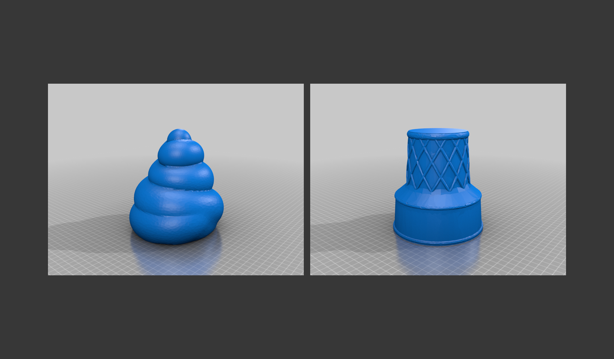
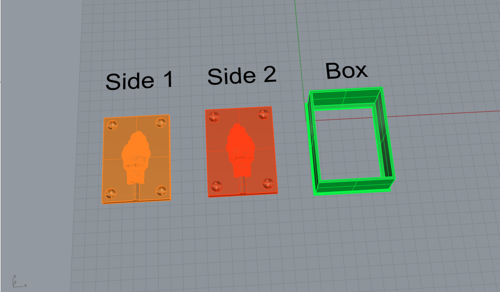
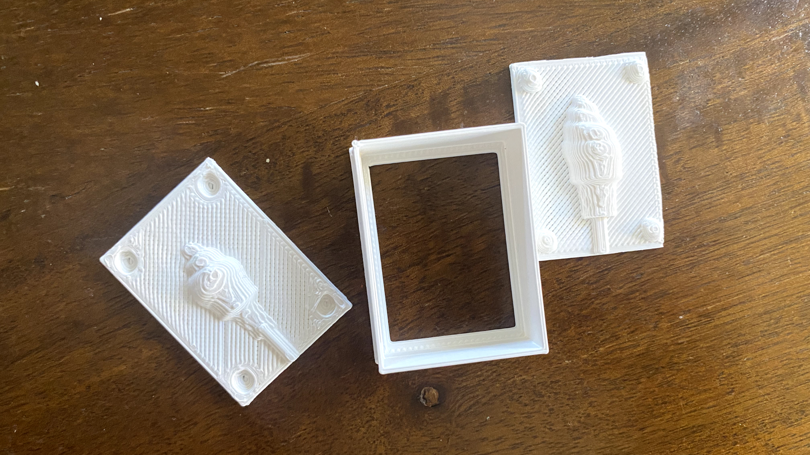
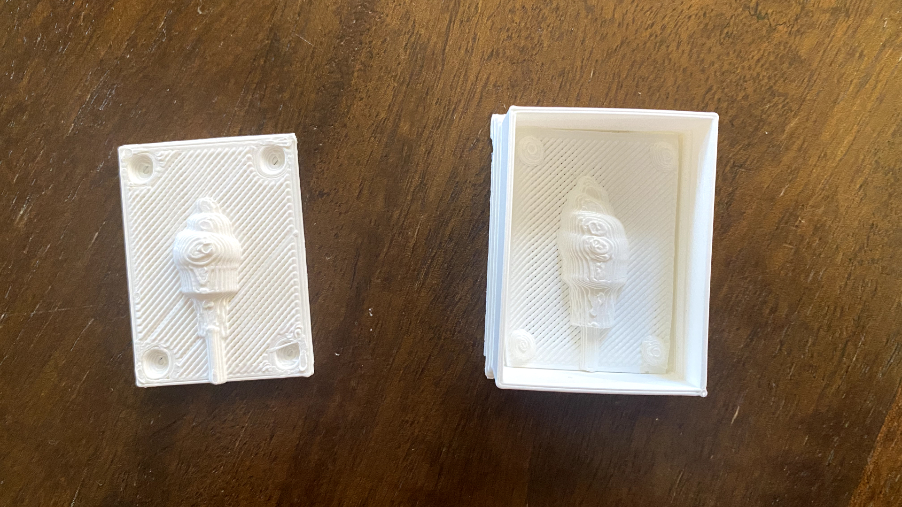
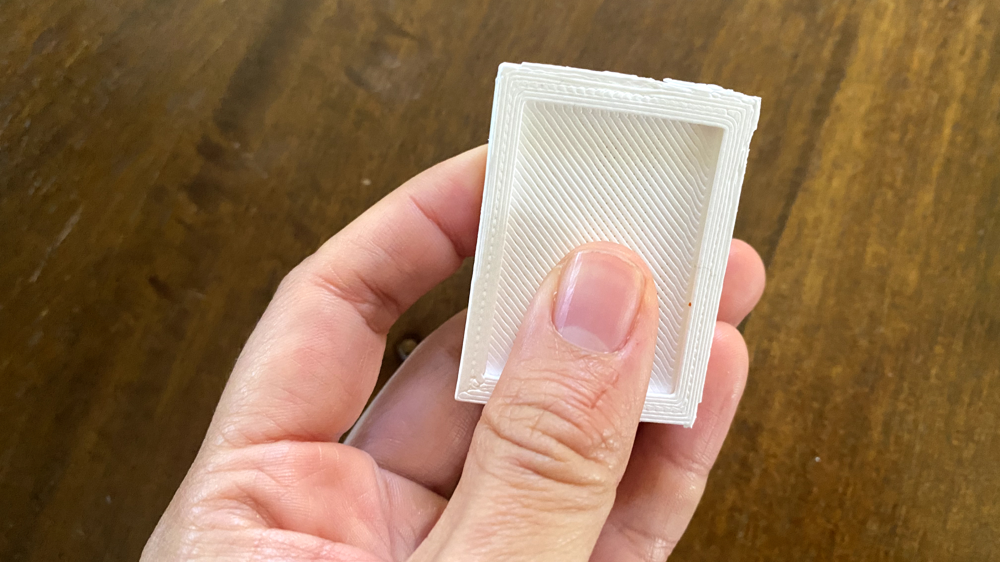
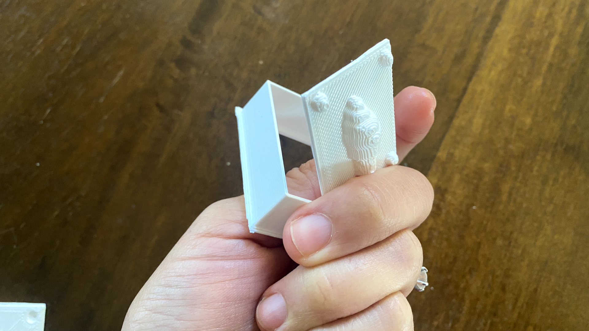

Process
I found a cute ice cream file on Thingiverse that I decided to use as my object to cast for this assignment. I liked the idea of handing out mini ice cream cones to people during winter.
The mesh for the cone needed some work, so I repaired it using "ReduceMesh" and "MeshRepair."
I combined them together using "MeshBooleanUnion" and then sliced it in half using "MeshBooleanSplit". I turned the object into a polysurface using "MeshtoNub" so it's easier to handle.

Then I used a bunch of Boolean commands to combine and subtract surfaces to create the mold for molds.
To make it easier for me to remove the silicone once it is set in my mold, I decided to separate the box structure of the mold into two parts: 1. The flat surface with the shape I want to cast 2. The container that the flat surface will sit in. It has a hole in the back for me to press into to take out my mold.
The ice cream mesh that I had downloaded from Thingiverse had some issues with non-manifold edges. For that reason, when I converted it into a polysurface using the "MeshtoNurb" command, I wasn't able to BooleanUnion one half of the ice cream object to its base container.
However, I wondered if Cura wouldn't see that as an error to print since it was still a closed polysurface. I decided to scale down my model by 50% to do a quick test print.
It took about an hour to print the model. They both printed well! And luckily they fit nicely into the mold container.
I am in the process of printing them at actual size.
  Special Thanks
As always, a HUGE thank you to Junchao! For your availability and responsiveness and for teaching me about the "Contour" command in Rhino. I always learn something new everytime I talk to you.
Thanks to Sara Cagle for her friendship and support throughout the week and for sharing amazing learning resources.